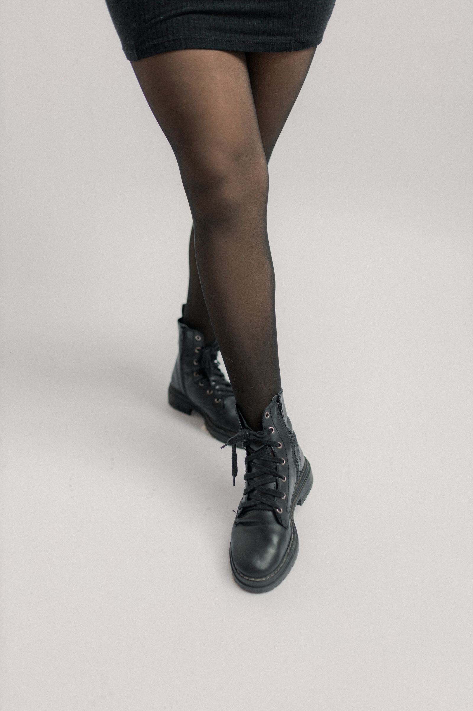

Капрон, нейлон, полиамид
Почему эти слова встречаются на одной этикетке и какую роль играет эластан.
Разобраться в материале ↗Разбираться в деталях
Всё о колготках, легинсах и капроне. От прозрачности полотна до истории бренда: изучаем то, что обычно остаётся незаметным.

С чего начать
DEN, состав и конструкция отвечают на разные вопросы. Эти материалы помогут разобраться в них последовательно.
Почему эти слова встречаются на одной этикетке и какую роль играет эластан.
Разобраться в материале ↗Тонкая нить и плотный рисунок: почему одна цифра не описывает всё изделие.
Открыть практический гид ↗
Крой, растяжимость и непрозрачность: на что смотреть за пределами DEN.
Изучить легинсы ↗Фотографии: Alexander Mass, Vika Glitter, Polina Tankilevitch / Pexels. Авторы, оригиналы и условия использования.
Имена и наследие
43 бренда в справочнике. История компании, особенности моделей и ссылки, по которым можно проверить данные.
Библиотека ТОНКО
Подробные главы для чтения и небольшие инструменты для практических вопросов.
Плотность, размер, конструкция и бережная стирка.
От шёлка и первых синтетических нитей до наших дней.
Посадка, повседневная одежда, спорт и сцена.
Предприниматели, производство и экономика отрасли.
Телесные тона, цвет и диагностика посадки.
Характеристики двух изделий рядом, со ссылками на источники.
Сохранённые модели и расчёт стоимости одной носки.
Капрон, полиамид, эластан: читаем состав осознанно.
Визуальная библиотека
Фотографии в крупном формате. Прозрачность, узор и посадка в реальных кадрах, с авторством и источниками.

Источники и лицензии изображений. Кадрирование при отображении; бренды указаны только там, где их подтверждает источник.
Редакционный подход
Мы отделяем историю от рекламы, сведения производителя от независимой проверки, а архивную модель от действующего каталога.